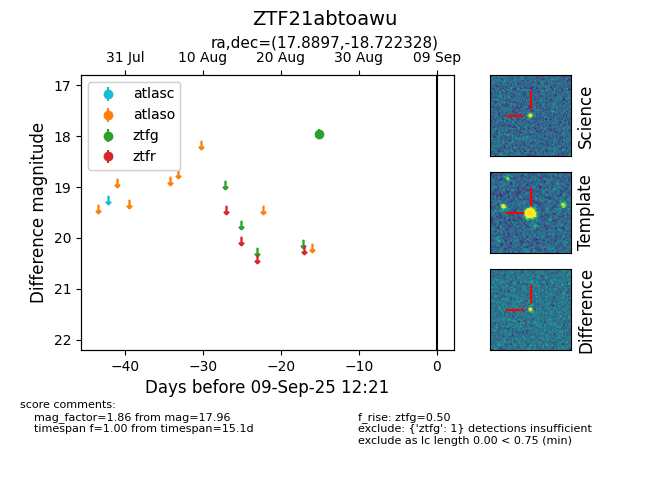

FINK: ZTF21abtoawu
Lasair: ZTF21abtoawu
ALeRCE: ZTF21abtoawu
ZTF21abtoawu (ztf,fink)
equatorial (ra, dec) = (17.8897,-18.72233)
galactic (l, b) = (152.8134,-80.40510)

last ztfg=17.96
1 ztfg detections